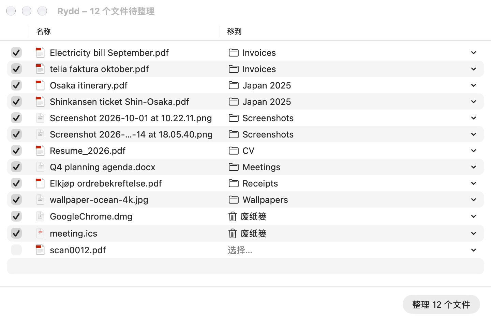

Rydd
每个文件，都回到该在的地方。
Rydd 待在菜单栏里，让你选择的文件夹保持整洁。它从你已有的文件夹里学习，为每个新文件建议去处，只移动你确认过的文件。Rydd 在挪威语里是“收拾一下”。
平台macOS 26 或更新版本
价格免费，Apache 2.0
网络完全不联网
语言EN, 简体, 繁體

它能做什么
- 由你决定选择要整理的文件夹，比如 Downloads 和桌面。选之前什么都不读取。
- 学习你的习惯建议跟着你已有的文件夹走，而不是套用固定的分类。
- 先看再动每一项移动都列出来。勾选、整理，改主意了随时撤销。
- 不会弄丢文件从不覆盖文件，删除永远是移到废纸篓。
- 设备端 AI可选的 Apple 智能归类离线运行，只看文件名。
获取 Rydd
免费、开源。即将登陆 Mac App Store；在那之前，可以从 GitHub 上的源代码构建。